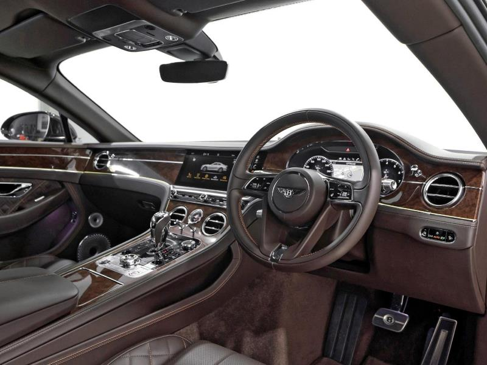
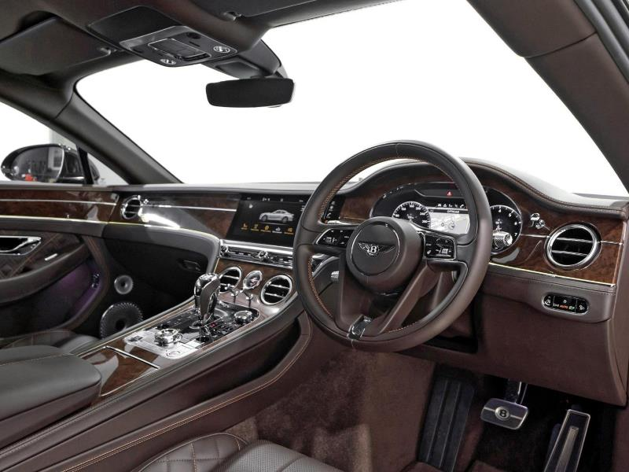
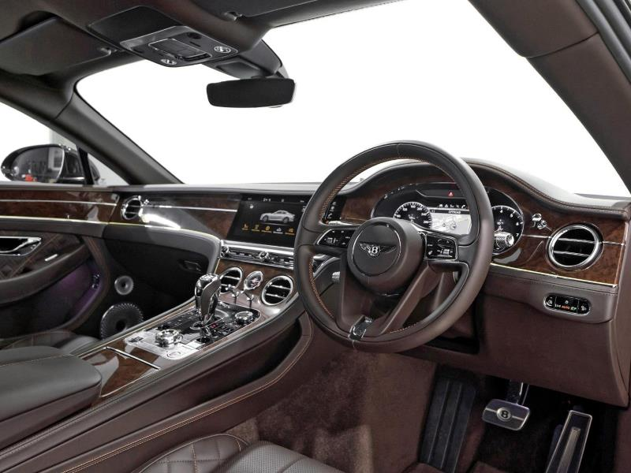
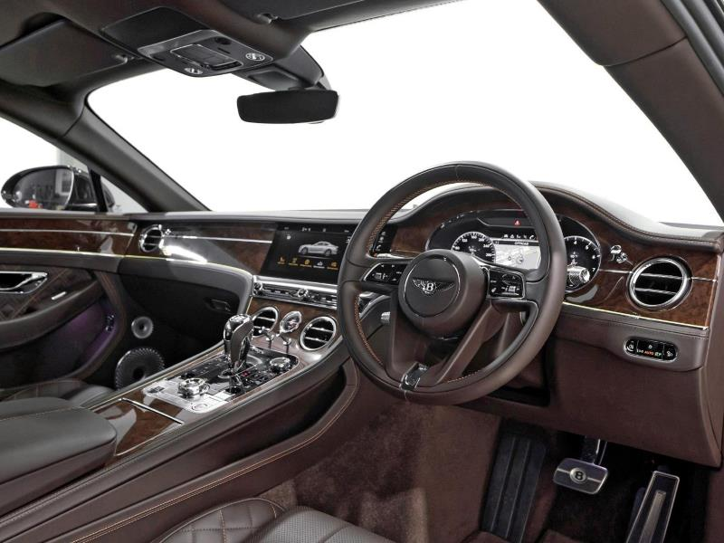

Full name:Bentley Continental GT W12 Coupe
Price of the product :R 3 795 000
Stock availability:Available
Description:2018 Continental GT First Edition W12 – Pre-Owned Price: R 3 795 000 Mileage: 11 500 Km Registered: Main Paint – Havana Main Hide – Burnt Oak Veneer – Burr Walnut Features included on this vehicle are as follows; • Bright Chromed Lower Bumper Matrix Style Grille • Heated, Single Tone, 3 Spoke, Hide Trimmed Steering Wheel • First Aid Kit • Battery Charger - European Adaptor • Bang & Olufsen for Bentley • First Edition Specification
| Manufacturers Colour | Previous Owners | Engine capacity | Fuel consumption | Seats | Havana | 0 | 6L | 12,2 /100km | 4 |
|---|